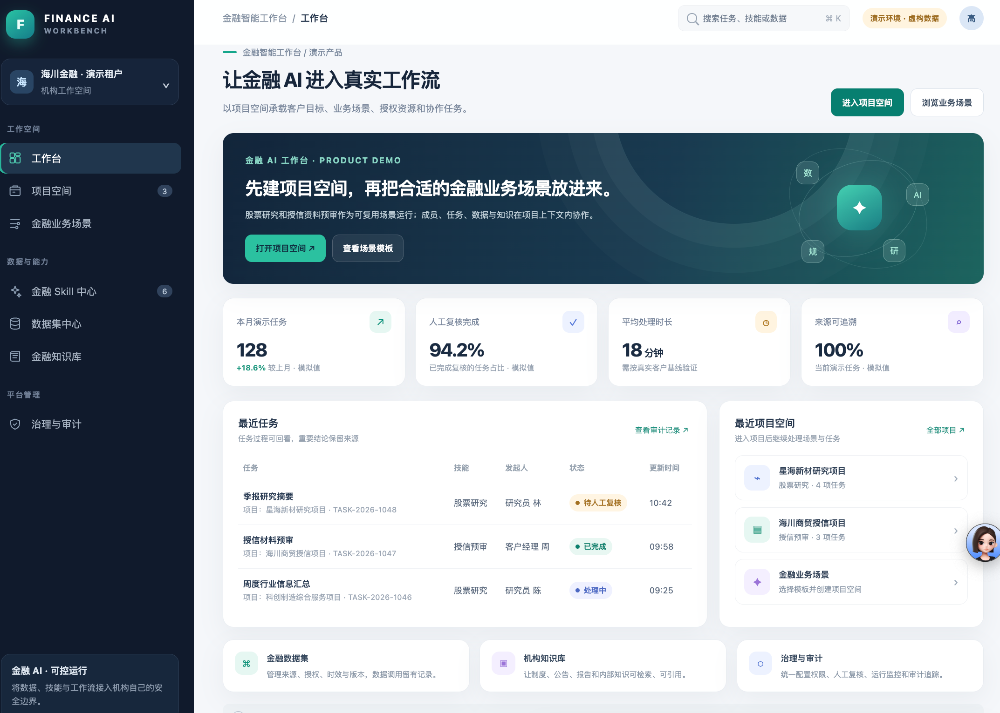

关键难点与处理方式
不同公众号和内容类型对风格、结构的要求不同，单套提示词很难兼顾稳定与差异。将读者、语气、结构沉淀为账号配置，再按任务调用对应 Skill，并用固定样例检查输出和交付状态。
AI 落地项目集 · 可验证、工程化、业务导向
主项目是公众号内容工作台；金融 AI 项目的业务工作台仍在验证中。
展示范围：界面与示例内容已脱敏；不公开完整提示词、Skill 源码、账号凭据或内部策略参数。
SELECTED WORK 01 · 内容创作
围绕创作者的日常任务，把来源、账号风格、内容生成和稿件编辑放进同一创作入口。
选择账号风格，从话题或参考来源开始。生成后可继续编辑。
不同公众号和内容类型对风格、结构的要求不同，单套提示词很难兼顾稳定与差异。将读者、语气、结构沉淀为账号配置，再按任务调用对应 Skill，并用固定样例检查输出和交付状态。
文章链路已接入本机 Codex 与写作 Skill；本机服务在线时可生成、编辑和留存，写入公众号草稿前由人确认。贴图 Agent 独立运行，工作台内的图像能力仍在验证中。
模型与工具：文章由本机 Codex 调用对应写作 Skill，文本模型随运行配置；图像生成单独配置，不从文本模型推断。
内容创作闭环
素材整理、初稿生成、质检到数据回看，AI 帮忙处理重复步骤；内容和发布由人确认。
整理对标内容和选题素材
产出：可用素材按账号表达习惯生成初稿
产出：文章初稿检查内容、补充修改
产出：可编辑成稿整理版式，提交草稿箱
产出：待确认草稿回看阅读表现和内容反馈
产出：下轮选题方向SELECTED WORK 02 · 金融研究
将股票研究任务拆成可核对的数据处理、规则计算、分析整理与人工复核，让金融 AI 进入已有研究工作流。

股票研究工作流已搭建，并使用历史样本回放检验规则假设。金融 AI 工作台的业务场景与交互仍在验证中。
语言模型负责理解研究问题、归纳结构化结果并组织报告；行情获取、指标计算和筛选规则由程序完成；研究结论由人核对后使用。
项目里的实际做法
做公众号内容和股票研究，我会先把事情拆清楚：哪些适合 AI 干，哪些适合程序干，哪些必须我自己盯。拆完再用真实任务反复试。
需求理解、资料整理和初稿，我让 AI 来做；数据计算和格式检查，交给程序；但关键事实和最终稿，我必须自己核对过才交付。
我会换主题、换资料多跑几遍，看有没有跑题、漏信息，生成结果能不能直接接着改。发现哪里不对，就调整写作规则，再用同类任务复查一遍。
从输入资料、写作规则、模型回答到工具执行，逐层排查，定位到具体卡点再修，修完重跑确认。
一句话总结：主动学习，用真实场景验证想法和AI落地效果，理论与实践不断结合提升AI能力